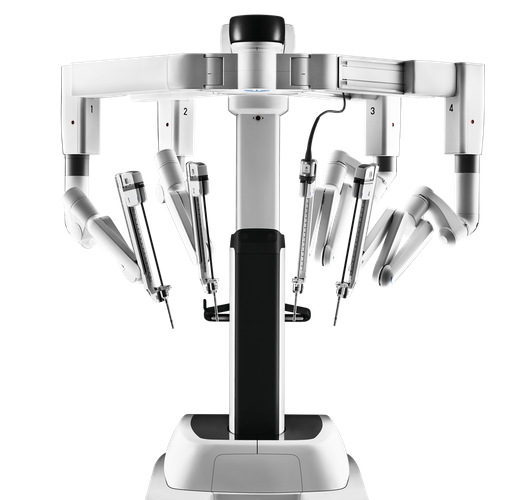
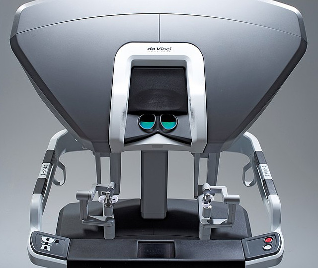

En 1999, Intuitive, une entreprise de conception et de production de robots médicaux américaine, a lancé le système chirurgical da Vinci. Il constitue un système de commande d’instrument endoscopique et permet de réaliser des interventions de type mini-invasives, et est devenu l’un des premiers systèmes chirurgicaux robotisés à obtenir une autorisation. En effet, en juillet 2000, puis en juin 2001, la Food and Drug Administration autorise l'utilisation du Da Vinci aux États-Unis pour un certain nombre d'opérations : cholécystectomie, prostatectomie… En mars 2001, Santé Canada a approuvé l'usage du Da Vinci pour les opérations de l'abdomen et du thorax.
Début 2010, il n'existait pas de concurrent au robot Da Vinci. Le nombre d’installations de robots Da Vinci a connu une importante progression ces dernières années. En octobre 2013, 80 robots étaient en service en France pour 3000 dans le reste du monde.
Fonctionnement
Le système chirurgical Da Vinci permet à votre chirurgien d'effectuer une chirurgie mini-invasive grâce à un ensemble d'instruments perfectionnés et à une vue 3D haute définition de la zone chirurgicale. La chirurgie mini-invasive avec da Vinci est largement utilisée en urologie et en gynécologie, ainsi que dans plusieurs autres procédures.

Le Da Vinci est composé de deux parties. La première se situe au-dessus de la personne à opérer et comporte trois (dans sa première version) ou quatre (à partir du modèle Da Vinci S) bras manipulateurs. Un bras tient une caméra endoscopique, les autres tiennent des instruments chirurgicaux tels qu'un bistouri, ou plus précisément un électrobistouri qui découpe les tissus à l'aide d'un courant électrique

La seconde est située à quelques mètres de la première, et comporte un siège sur lequel s'assied le chirurgien, deux écrans devant lesquels ce dernier vient placer ses yeux et qui retransmettent en direct la vue en 3D de la caméra endoscopique située sur la première partie, et deux manettes pour contrôler les instruments chirurgicaux situés sur la première partie. Le système da Vinci traduit en temps réel les mouvements des mains du chirurgien à la console, en pliant et tournant les instruments pendant l'intervention. Les minuscules instruments au poignet bougent comme une main humaine, mais avec une plus grande amplitude de mouvement. La taille de l'instrument permet au chirurgien d'opérer par une ou quelques petites incisions et les bras robotiques sont capables d'effectuer un mouvement circulaire complet, ce qui n'est généralement pas possible à cause d'armes non robotiques.
L'utilisation du Da Vinci par un chirurgien apporte plusieurs avantages : ses bras manipulateurs possèdent sept degrés de liberté, ce qui permet une plus grande aisance en chirurgie minimale-invasive. Ils permettent une plus grande précision des gestes grâce à une filtration des tremblements. Le geste chirurgical est rapide et efficace tout en réduisant au maximum les séquelles que peuvent provoquées l'opération. L'un des résultats est la réduction du nombre de complications associées à l'hystérectomie pour les affections bénignes. Un examen des études publiées suggère que les patients qui ont subi cette intervention avec da Vinci peuvent éprouver moins de complications que les patients qui ont subi une chirurgie ouverte et laparoscopique.
En raison du nombre minimum d'incisions nécessaires pour faciliter les mouvements des bras robotiques, la guérison est plus rapide. Cela réduit le séjour à l'hôpital d'environ la moitié de ce qui est requis pour les procédures conventionnelles. Cela réduit les coûts hospitaliers d'environ 33%.
En outre, la procédure est moins douloureuse et est associée à une récupération plus rapide. Étant donné que les incisions requises sont petites, il ne laisse pas une grande cicatrice lors de la guérison de la plaie.
Lors d'une opération avec un Da Vinci, le chirurgien bénéficie d'un meilleur confort que lors d'une opération classique sous cœlioscopie ou laparoscopie, il se fatigue donc moins et évite également certains troubles musculo-squelettiques, de type tendinite.
Enfin, la voie est ouverte pour les interventions à longue distance (jusqu'à plusieurs milliers de kilomètres, comme l'a démontré l'opération Lindbergh en 2001.
Inconvénients
Sur plus de 17 000 interventions, une trentaine d'événements indésirables graves ont été déclarés. Dans un cadre où l'utilisation du robot nécessite une formation particulière du chirurgien mais aussi de l'équipe en charge de la procédure chirurgicale, le manque de formation d'un professionnel impliqué dans l'intervention pourrait être en cause de ces événements.
Les événements événements indésirables graves rencontrés sont majoritairement des hémorragies et perforations d’organes. Les autres EIG décrits sont par exemple des étirements de racines nerveuses, syndrome des loges, œdèmes... Ces derniers sont décrits comme pouvant être liés à une durée d’intervention prolongée du fait d’un opérateur manquant encore d'expérience.
Le Da Vinci ne procure pas de sensation tactile au chirurgien lorsque les pinces touchent un organe, bien que cette amélioration soit prévue à l'avenir par le fabricant. Dans le cas d’examen où le patient n’est pas anesthésié, un risque de « déshumanisation » de l’acte avec moins d’échanges patients-patriciens
La nécessité de disposer de deux sites équipés par des appareils compatibles et de connexions sécurisées à très haut débit semblent des obstacles importants.
Côté finance, le robots plus de deux millions d’euros et les coûts d'infrastructure et d'organisation sont très élevés : le coût annuel de l’entretien est d’environ 100 000€ et le coût d’entretien après chaque opération est d’environ 2000€.
Opérations remarquables
2003 : - première prostatectomie réalisée avec un Da Vinci, par Mani Menon aux États-Unis.
2008 : - opération d’un cancer de la langue.
2009 : - ablation totale de la glande thyroïde au CHU de Nîmes.
2010 : - opération d’une tumeur thoracique d’un enfant de 5 ans au CHU de Nancy.
- la première laryngectomie totale par voie transorale de France à l’hôpital européen Georges-Pompidou - la première greffe de pancréas peu invasive au monde, à l'hôpital universitaire de Pise.
2011 : - un Da Vinci est utilisé pour la première fois pour réaliser une ablation de l'utérus par voie vaginale au CHRU de Lille.
- première européenne en chirurgie robotique néonatale par le Dr Fourcade et son équipe au CHU de Limoges.
2015 : - première mondiale au CHU de Toulouse : Transplantation rénale, donneur vivant par voie robot-assistée pure avec extraction et introduction du greffon par voie vaginale.
- première mondiale : ablation du sein effectuée à l'Hôpital Gustave Roussy à Villejuif par le Dr Benjamin Sarfati.
2018 : - des chirurgiens de l’Institut Gustave Roussy sont parvenus à retirer une tumeur située dans le rhino-pharynx d’un homme de 28 ans.